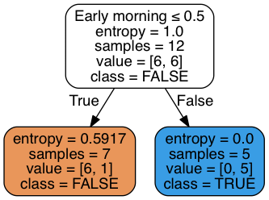
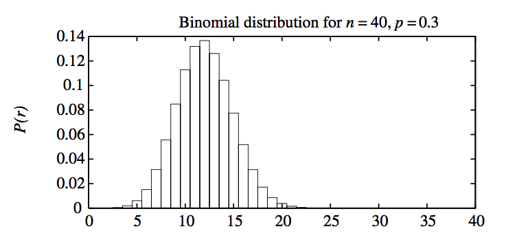
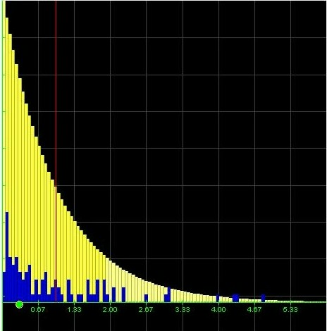
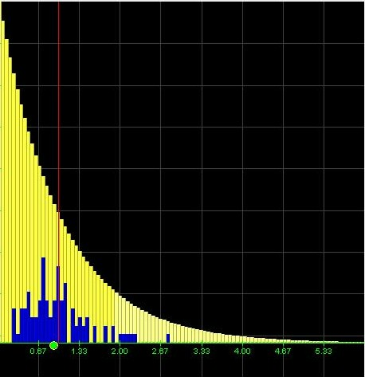
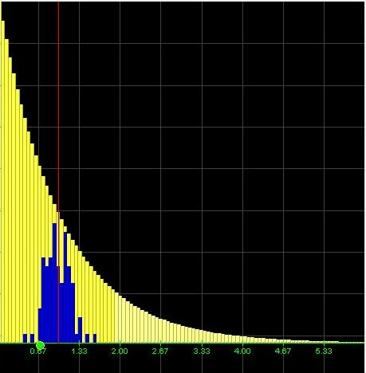
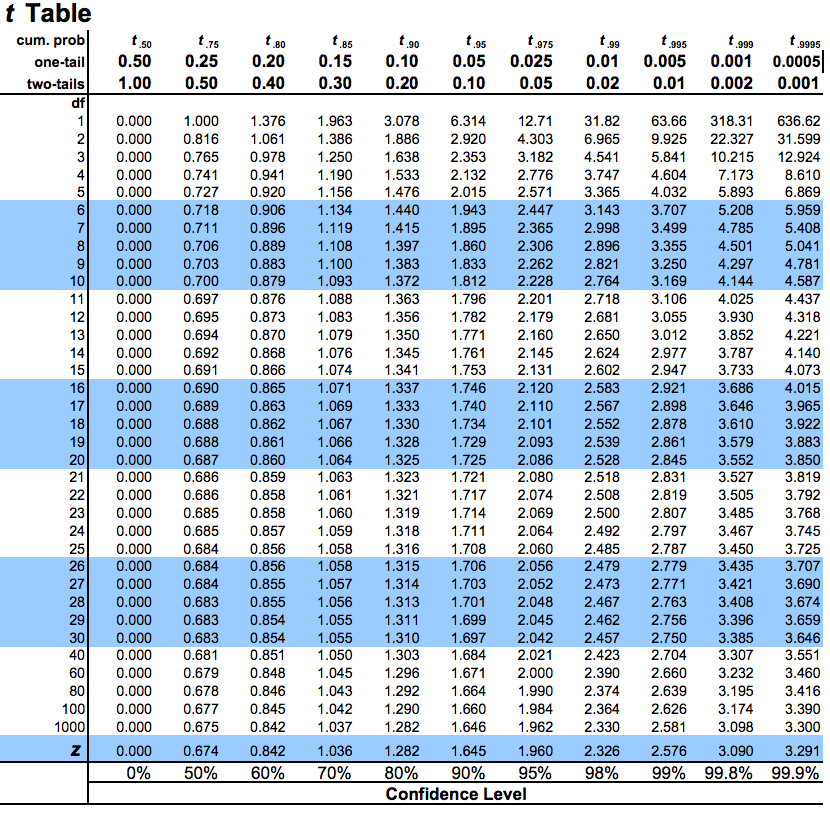

Introduction to Machine Learning and Data Mining
Kyle I S Harrington / kyle@eecs.tufts.edu
Some slides adapted from Roni Khardon and Tom Mitchell
Model Selection
Multiple models can often describe the same data,
How do we choose which one to use?
Model Selection
We may favor the model with lower error/higher accuracy
Even so, is the model with the lowest error on a particular set of data the one that we want?
True error
$error_D(h) \equiv Pr_{x \in D} [f(x) \neq h(x)]$
- f is our target function
- D is the complete distribution/dataset
Sample error
$error_S(h) \equiv \frac{1}{n} \displaystyle \sum_{x \in S} \delta(f(x) \neq h(x))$
- S is the sample dataset
- $\delta(f(x) \neq h(x)) = 1$ if the condition is true, otherwise $0$
True error v. Sample error
How well does $error_S(h)$ estimate $error_D(h)$?
True error v. Sample error
Consider the case where $S$ is our training set:
$bias \equiv E[error_S(h)] - error_D(h)$
For any training set, we expect that bias will be negative because $h$ and $S$ are not independent
What other complications beyond $bias$ might arise?
True error v. Sample error
Even if $S$ and $h$ are independent, $error_S(h)$ may vary from $error_D(h)$
Sample error
$error_S(h)$ is a random variable
If we rerun with a different randomly drawn $S$, where $|S| = n$
$P( n * error_S(h) ) = P(r) = \frac{ n! } { r! ( n - r )! } p^r ( 1 - p )^{n-r}$,
where $p = error_D(h)$
Samples and Stats
A random variable, $Y$, has a value representing the outcome of an experiment (a coin lands heads up)
Probability distribution for a random variable is the probability $Pr(Y=y_i)$ that Y will be $y_i$ for each possible $y_i$
Samples and Stats
Expected value (aka mean) : $\mu_Y = E[Y] = \displaystyle \sum_i y_i Pr(Y=y_i)$
Variance : $Var(Y) = E[(Y-\mu_Y)^2]$ - How far the distribution spreads about the mean
Standard deviation : $\sigma_Y = \sqrt{ Var(Y) }$
Normal Distribution
Bell curve described by a mean and standard deviation

Normal Distributions
90% of area (probability) lies in $\mu \pm 1.64 \sigma$
N% of area (probability) lies in $\mu \pm z_N \sigma$
| N% | 50% | 68% | 80% | 90% | 95% | 98% | 99% |
| $z_N$ | 0.67 | 1.00 | 1.28 | 1.64 | 1.96 | 2.33 | 2.58 |
Normal Distributions to Probabilities
$x \in \mu \pm z_N \sigma$, translates to: "with probability N%"
$\mu \in x \pm z_N \sigma$, translates to: "with confidence N%"
Normal distributions to Probabilities
Consider $x$, drawn from $\mathcal{N}(\mu,\sigma)$
We say: with confidence 95%, $\mu \in x \pm 1.96 \sigma$
Normal distributions to Probabilities
If sample data $S$ contains $n \geq 30$ samples drawn independent of $h$ and each other,
Then with approx. 95% probability $error_S(h)$ lies in interval
$error_D(h) \pm 1.96 \sqrt{\frac{error_D(h) (1 - error_D(h))}{n}}$
Central Limit Theorem
Consider a set of independent, identically distributed random variables $Y_1 ... Y_n$, drawn from an arbitrary probability distribution with mean $\mu$ and finite variance $\sigma^2$. The sample mean is
$\bar{Y} \equiv \frac{1}{n} \displaystyle \sum^{n}_{i=1} Y_i$
Central Limit Theorem
$\bar{Y} \equiv \frac{1}{n} \displaystyle \sum^{n}_{i=1} Y_i$
As $n \rightarrow \infty$, the distribution governing $\bar{Y}$ approaches a Normal distribution with mean $\mu$ and variance $\frac{\sigma^2}{n}$
Central Limit Theorem
Yellow indicates the shape of underlying distribution (Weibull), blue bars are 50 averages of 1 sample
Central Limit Theorem
Yellow indicates the shape of underlying distribution, blue bars are 50 averages of 5 samples
Central Limit Theorem
Yellow indicates the shape of underlying distribution, blue bars are 50 averages of 25 samples
From Binomial to Normal
By applying the central limit theorem we can approximate a binomial distribution with a normal distribution
We can then say:
- $\mu_{error_S(h)} = error_S(h)$
- $\sigma_{error_S(h)} \approx \sqrt{ \frac{error_S(h) (1 - error_S(h)) } {n} }$
Measuring Classifier Performance
If we use a classifier on a test set with $n$ samples
We estimate the error rate as $\hat{p} = \frac{|incorrect|}{n}$
If $n \geq 30$, (use C.L.T.) $\hat{p}$ is approx. distributed as $\hat{p} = \mathcal{N}(\mu, \sigma)$
Measuring Classifier Performance
If $n \geq 30$, (use C.L.T.) $\hat{p}$ is approx. distributed as $\hat{p} = \mathcal{N}(\mu, \sigma)$
$\mu$ is $error_D(h)$, and $\sigma$ is $\sqrt{ \frac{error_D(h) (1-error_D(h)) }{n} }$
Oi, we're stuck with $error_D(h)$'s in our expression!
Comparing Algorithms
Consider 2 hypotheses $h_1$ and $h_2$, each tested on an independenly generated sample set from the same distribution
It would be interesting to know the difference in error
$d \equiv error_D(h_1) - error_D(h_2)$
Comparing Algorithms
Target: $d = error_D(h_1) - error_D(h_2)$
Estimate with: $\hat{d} \equiv error_{S_1}(h_1) - error_{S_2}(h_2)$
Comparing Algorithms
Estimate with: $\hat{d} \equiv error_{S_1}(h_1) - error_{S_2}(h_2)$
Use C.L.T., to estimate the distribution
$\sigma_{\hat{d}} = \sqrt{ \frac{error_{S_1}(h_1) (1 - error_{S_1}(h_1))}{ n_1} + \frac{ error_{S_2}(h_2) ( 1 - error_{S_2}(h_2) ) }{n_2} }$
Comparing Algorithms
Find the lower and upper limit of the interval such that N% of probability mass is within the interval:
$\hat{d} \pm z_N \sqrt{ \frac{error_{S_1}(h_1) (1 - error_{S_1}(h_1))}{ n_1} + \frac{ error_{S_2}(h_2) ( 1 - error_{S_2}(h_2) ) }{n_2} }$
Lookup in the table of $N%$ to $z_N$ values
A Method for Comparing Algorithms
Now consider hypotheses $h_A$ and $h_B$
Partition into k-folds, $T_1 ... T_k$, of equal size $\geq 30$
For $i$ from $1$ to $k$: $\delta_i \leftarrow error_{T_i}(h_A) - error_{T_i}(h_B)$
A Method for Comparing Algorithms
For $i$ from $1$ to $k$: $\delta_i \leftarrow error_{T_i}(h_A) - error_{T_i}(h_B)$
N% confidence interval estimate:
$\bar{ \delta } \pm t_{N,k-1} s_{\bar{\delta}}$
$s_{\bar{\delta}} \equiv \sqrt{ \frac{1}{k(k-1)} \displaystyle \sum_{i=1}^k (\delta_i - \bar{ \delta })^2 }$
Where did $t_{N,k-1}$ come from?
A Method for Comparing Algorithms
Table source
A Method for Comparing Algorithms
Now consider hypotheses $h_A$ and $h_B$
Target: $d = error_D(h_A) - error_D(h_B)$
N% confidence interval estimate:
$\bar{ \delta } \pm t_{N,k-1} s_{\bar{\delta}}$
$s_{\bar{\delta}} \equiv \sqrt{ \frac{1}{k(k-1)} \displaystyle \sum_{i=1}^k (\delta_i - \bar{ \delta })^2 }$
Model Selection
What did we just do?
Model Selection
- Estimating true error from a sample set
- Sample error follows a binomial distribution
- Using the Central Limit Theorem, sampling can lead to a normal distribution
- Hypotheses can be compared with a t-test
Assignment 3 is posted
Turn in hardcopy on 02/16
What Next?
Features! (reading listed on site)